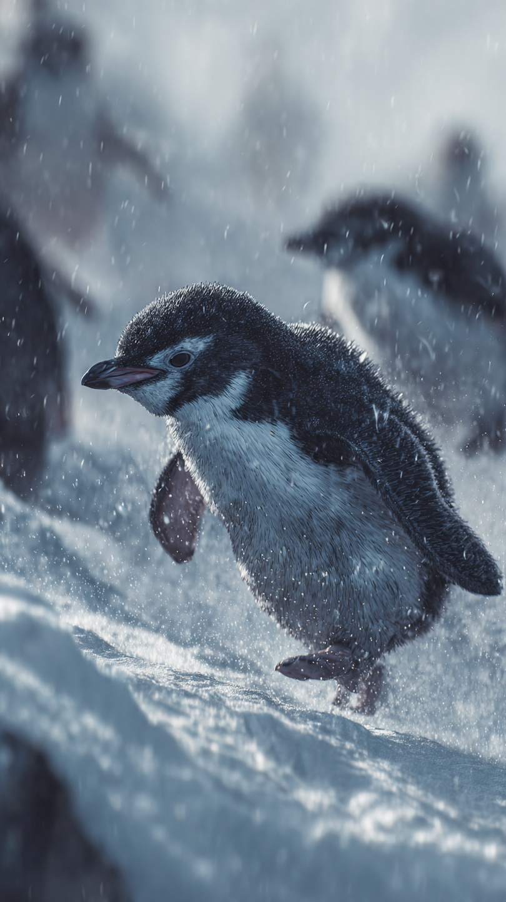

```html
🐧 البطريق الذي حلم بالطيران | قصص أطفال
```
في مكان بعيد بين الجبال المغطاة بالثلوج، كان يعيش بطريق صغير اسمه بيبو.
كان بيبو يعيش مع عائلته في القطب البارد، حيث الجليد في كل مكان والرياح تهب بقوة.
لكن بيبو كان يملك حلمًا غريبًا بالنسبة للبطاريق...
كان يحلم بالطيران.
كان يقف كل يوم على أعلى قطعة من الجليد، وينظر إلى الطيور وهي تحلق في السماء.
ويقول:
"أتمنى لو أستطيع التحليق مثلها."
كان أصدقاؤه يضحكون بلطف ويقولون:
"لكن البطاريق لا تطير يا بيبو."
فيحزن قليلًا، لكنه لا يتوقف عن الحلم.
قال:
"ربما لا أستطيع الطيران مثل الطيور..."
"لكنني سأجد طريقة لأصل إلى السماء."
بدأ بيبو يتعلم من الطيور.
راقب كيف تستخدم أجنحتها، وكيف تتحرك مع الرياح، وكيف تحافظ على توازنها.
ثم بدأ يتدرب كل يوم.
كان يقفز فوق الجليد، وينزلق بسرعة، ويحاول التحكم في حركته.
مرت الأيام، وأصبح بيبو أفضل.
لم يطِر في السماء مثل الطيور...
لكنه أصبح أسرع بطريق في الماء، وأفضل من يستخدم الرياح والجليد.
وفي يوم من الأيام، حدثت عاصفة قوية في القطب.
ابتعدت مجموعة من البطاريق الصغيرة عن مكانها، ولم تعرف كيف تعود.
نظر الجميع إلى العاصفة بخوف.
لكن بيبو قال:
"أنا سأساعدهم."
لم يكن يعرف أن حلمه بالطيران سيصبح السبب في إنقاذ أصدقائه.
📷 الصورة رقم 1
انطلق بيبو وسط العاصفة القوية.
كانت الرياح تدفعه في كل اتجاه، والثلوج تتساقط بكثرة.
لكن بدلًا من الخوف، بدأ يستخدم كل ما تعلمه.
تذكر كيف تتحرك الرياح، وكيف ينزلق فوق الجليد، وكيف يحافظ على توازنه.
وصل إلى مكان بعيد، وهناك وجد البطاريق الصغيرة تختبئ خلف جبل من الثلج.
كانت خائفة ولا تعرف طريق العودة.
قال لهم بيبو:
"لا تقلقوا، سأعيدكم إلى المنزل."
لكن الطريق كان صعبًا.
كانت هناك أماكن لا يمكن المرور منها، والثلج كان يغطي كل العلامات التي يعرفونها.
فكر بيبو قليلًا.
ثم نظر إلى السماء.
رأى الطيور تحلق فوق العاصفة، وتستخدم الرياح لتعرف الطريق.
قال:
"لقد كنت أظن أن الطيران يعني فقط أن أرفع جسمي في الهواء..."
"لكن الطيران الحقيقي هو أن أفهم العالم من حولي."
استخدم بيبو معرفته بالرياح ليحدد الاتجاه الصحيح.
وقاد البطاريق الصغيرة عبر طريق آمن بين الجليد.
وفي الطريق، ساعدهم على عبور الأماكن الصعبة، وشجعهم عندما شعروا بالخوف.
بعد رحلة طويلة، ظهر ضوء القرية من بعيد.
فرحت البطاريق الصغيرة وقالت:
"لقد أنقذتنا يا بيبو!"
لكن بيبو لم يكن يفكر في نفسه...
كان يفكر في شيء آخر.
لقد اكتشف أن حلمه تحقق بطريقة مختلفة تمامًا.
وعندما عاد إلى القرية، كان الجميع ينتظره.
لكن هناك مفاجأة كبيرة كانت تنتظره أيضًا.
📷 الصورة رقم 2

عندما عاد بيبو إلى القرية، تجمع جميع البطاريق حوله.
كانوا سعداء جدًا لأنه أنقذ البطاريق الصغيرة من العاصفة.
اقترب منه والده وقال:
"كنت دائمًا تظن أن حلمك مستحيل..."
"لكن انظر ماذا فعلت."
ابتسم بيبو وقال:
"لم أطِر في السماء مثل الطيور..."
"لكنني تعلمت كيف أستخدم ما أملكه لأفعل شيئًا رائعًا."
أقيم احتفال كبير في القرية تكريمًا لبيبو.
لم يحصل على جائزة لأنه أصبح طائرًا...
بل لأنه أثبت أن كل مخلوق لديه طريقة خاصة لتحقيق أحلامه.
في الأيام التالية، أصبح بيبو يساعد البطاريق الصغيرة على التدريب.
كان يقول لهم:
"لا تحاولوا أن تصبحوا مثل الآخرين..."
"اكتشفوا ما يجعلكم مميزين."
مرت السنوات، وظل اسم بيبو يُحكى بين البطاريق.
فقد أصبح رمزًا للشجاعة والإصرار.
وعندما كان أحدهم يقول:
"هذا الأمر مستحيل."
كان الجميع يبتسمون ويتذكرون البطريق الصغير الذي حلم بالطيران.
فقد تعلم بيبو أن بعض الأحلام لا تتحقق بالطريقة التي نتخيلها...
لكنها قد تقودنا إلى شيء أجمل مما حلمنا به.
🐧❄️ انتهت القصة ❄️🐧
العبرة:
لا تجعل اختلافك يمنعك من الحلم، فلكل شخص طريقه الخاص لتحقيق النجاح.